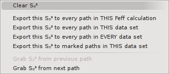

Once some paths have been dragged from the FEFF window onto the
Data window containing the gold foil data, it is time to begin
defining math expressions for the path parameters. In the following
figure, the path corresponding to the first coordination shell has
been selected from the path list. A path is selected by left clicking
on its label in the path list. Doing so, displays that path on the
right side of the Data window.
At the top of the Path page are two checkboxes. One is used to
include and exclude a path from the fitting model. In this way, you
can control which paths are used in a fit without having to remove
them from the path list. The other check box is used to indicate if
the current path should be transfered to the plotting list in the
Plot window at the end of a fit.
On the to do list:
Implement and explain the two items in the "other path options" pane.
The text box contains a brief description of the geometry of the
scattering path. For a degenerate path, this shows an example
scattering geometry. The simple explanation of the shape of the path
and its heuristic importance are also given in the text box.
Beneath the scattering geometry is a table of path parameters labels
and text boxes. Math expressions are entered into these text boxes.
In the following image, a simple fitting model appropriate for a
cubic, monoatomic material like our gold foil has been entered for the
first shell path. This includes simple expressions for S²₀ and
E₀ consisting of variables that will be floated in the fit. A
model of isotropic expansion is provided for ΔR . The σ²
path parameter is expressed using the correlated Debye model. The
other path parameter text boxes have been left blank and will not be
modified in the fit.

That. of course, establishes the parameterization of the path
parameters only for the first path. The same editing of path
parameter math expressions must happen for all the other paths used in
the fit.
The most straightforward way to do this editing chore is to click on
each successive path in the path list, then click into each text box,
then type in the math expressions. That, however, is really tedious.
|
For math expressions that are the same for every path -- E₀ is a
common example -- ARTEMIS provides some automation tools. Each of
the path parameter labels on the Path page is sensitive to either left
or right click. Either kond of click posts a menu like the one of the
left. The top option is used to erase the contents of the associated
text both, but only on this path.
The next four options are used to push the math expression for the
associated path parameter onto other paths. These four options work
much the same way as the similar function from the Path menu in the
Data window, except only for a single path parameter.
The last two options are used to grab a math expression from one of
the surrounding paths.
The menu that pops up for the σ² parameter has two additional
options. One inserts a math expression for using the correlated Debye
function for σ² , the other inserts the math expression for an
Einstein model. Both the Debye and Einstein function depend on the
measurement temeprature and a characteristic temperature. Typically,
the measurement temperature is a set variable and the characteristic
temperature is a guess. When either function is inserted into the
text box, parameters are created on the GDS page.
|

|